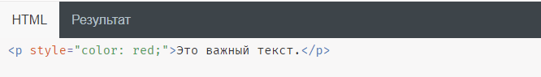

-
CSS используется для определения стилей (правил) оформления документов — включая дизайн, вёрстку и вариации макета для различных устройств и размеров экрана. У такого способа форматирования несколько достоинств:
► теги не дублируются;
► документ проще обслуживать;
► внешний вид всего сайта можно изменить централизованно, а не корректировать форматирование каждой странички.
-
Стили можно разметить внутри тега < HEAD > или использовать отдельный CSS-файл.
-
Вот так можно прописать CSS в качестве атрибута непосредственно в HTML:
